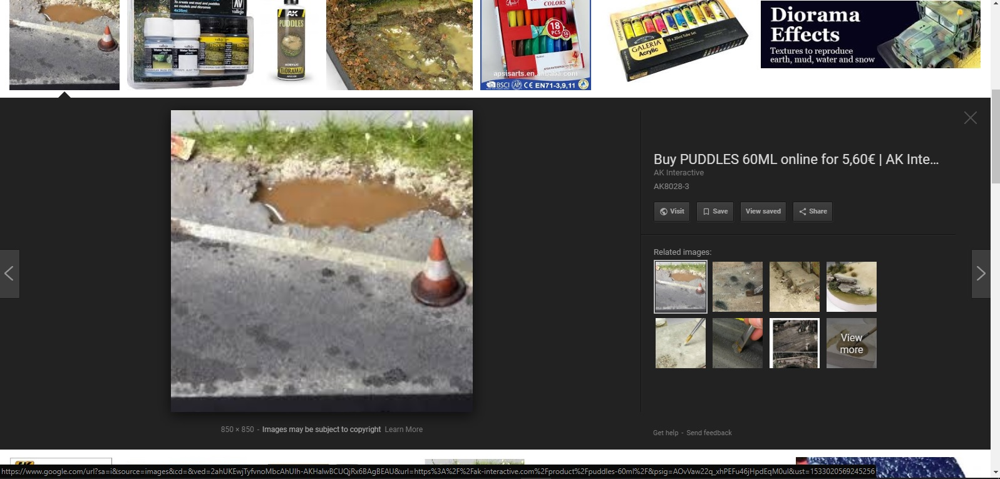
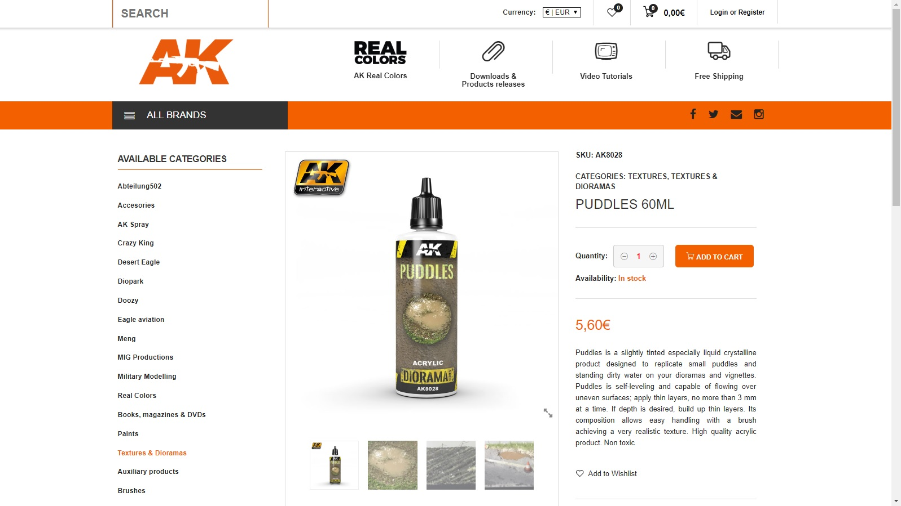
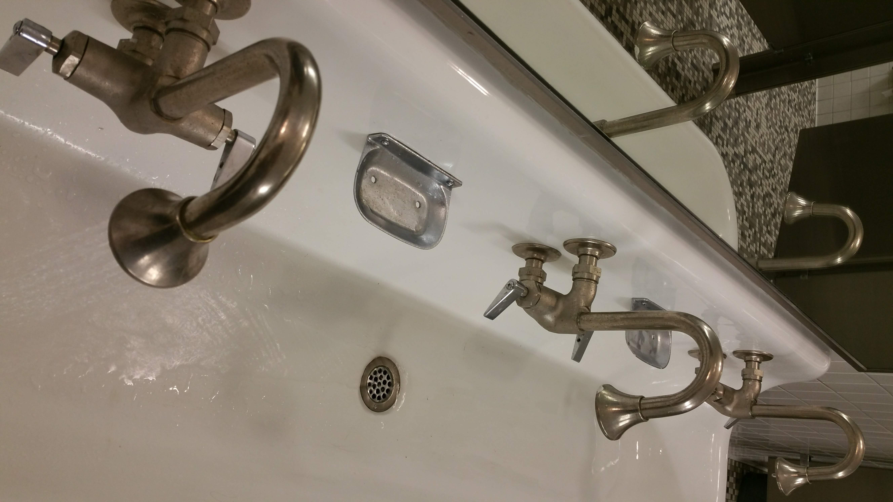
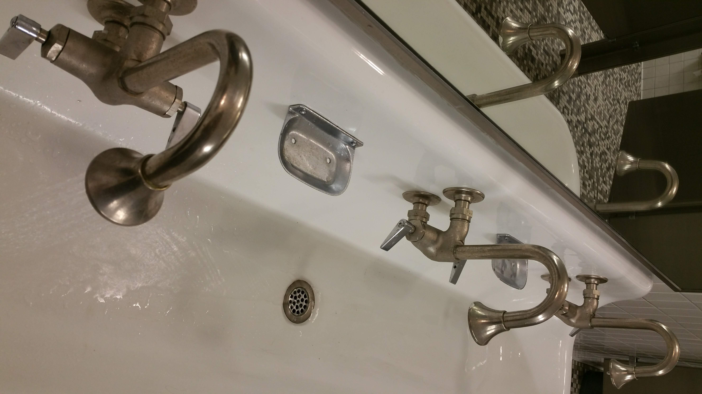

Spill by Kentaro Matsuoka
Rain Gutter from Getty Images
New Haven Broadway by Candace Chung
Puddle Sky from Ken Braddy's Sunday School Website

Droplet from the "Surface Tension" Wikipedia page
Acrylic Puddle in Diorama by AK Interactive, Co.
BUY PUDDLES 60ML ONLINE for 5,60€ by AK Interactive, Co. via Google Images
Acrylic Puddle Maker by AK Interactive, Co.
Gutter Puddle by Kentaro Matsuoka
Car Oil in Puddle with Utility Pole...and Me by Kentaro Matsuoka
Tree Ripples by Kentaro Matsuoka
 

Sinks by Kentaro Matsuoka
Closeup by Kentaro Matsuoka
Steps Up by Kentaro Matsuoka
Steps Down by Kentaro Matsuoka
Focus Here, Focus There by Kentaro Matsuoka
Leftover Juices from Roast Beef in Skillet with Minced Onions from Cookpad Recipes
Meatloaf by Kentaro Matsuoka
Burger Fats & Juices by Kentaro Matsuoka
Iced by Kentaro Matsuoka

Miami Beach Flood on Uneven Surfaces from Poor Infrastructure from CNN
2017 Houston Floods Photo by Houston Chronicle's David J. Phillip